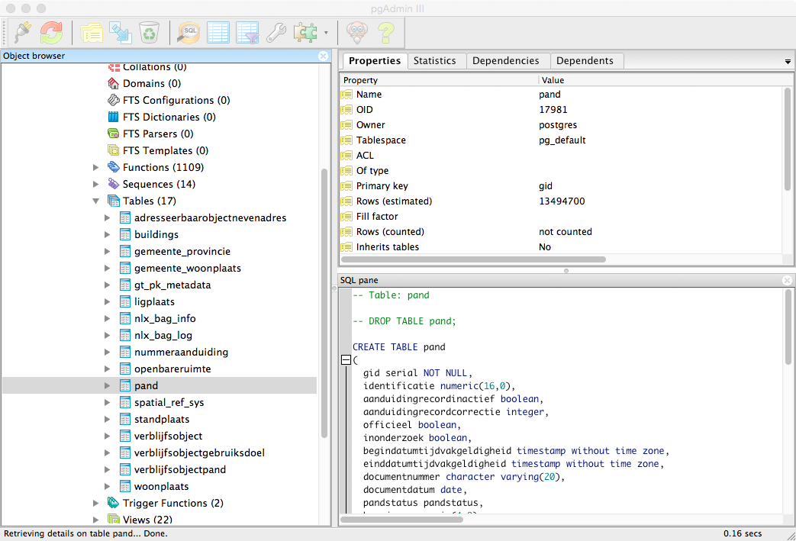

Haarlem
Waag Society, Open Data, CitySDK, Buildings Map
Bert Spaan & Job Spierings

Waag Society

Biohack Academy
Fabschool Kids

Hack the Brain
Code for NL
CitySDK
CitySDK: three-year open data project, funded by European Union
8 cities, three domains: participation, mobility, tourism
One API for all city data - public transport, parking, monuments, events, etc.
Main concept: link data from different sources/silos to objects that actually exist in a city

DIVV Data Portal

Data Formats

Parking Garage

Silos
Parking Garage
Objects can contain data on multiple layers
Result: CitySDK LD API

Screenshot CitySDK map viewer
Builings and addresses make for a good base layer to link other datasets to
In the Netherlands, we have the Basisregistraties Adressesn en Gebouwen (BAG)
All adresses and buildings in the Netherlands, released as open data

BAG viewer
And for each building, the BAG contains its year of construction, too!
Haarlem
And then, this happened:

WIRED

The Verge
Great! But my map was pretty easy to make:

BAG XML
PGAdmin
TileMill

CartoCSS
Only thanks to our open data laws, and hard work by municipality's surveyors and GIS departments
BAG
And open source geospatial software: PostGIS, TileMill, Leaflet
One question remains: what exactly is a building?
(This is important: the BAG is a reference data set, used by many govermental organizations)

BAG
TL;DR open data is difficult but very useful - and it lets you create nice maps
Thanks!